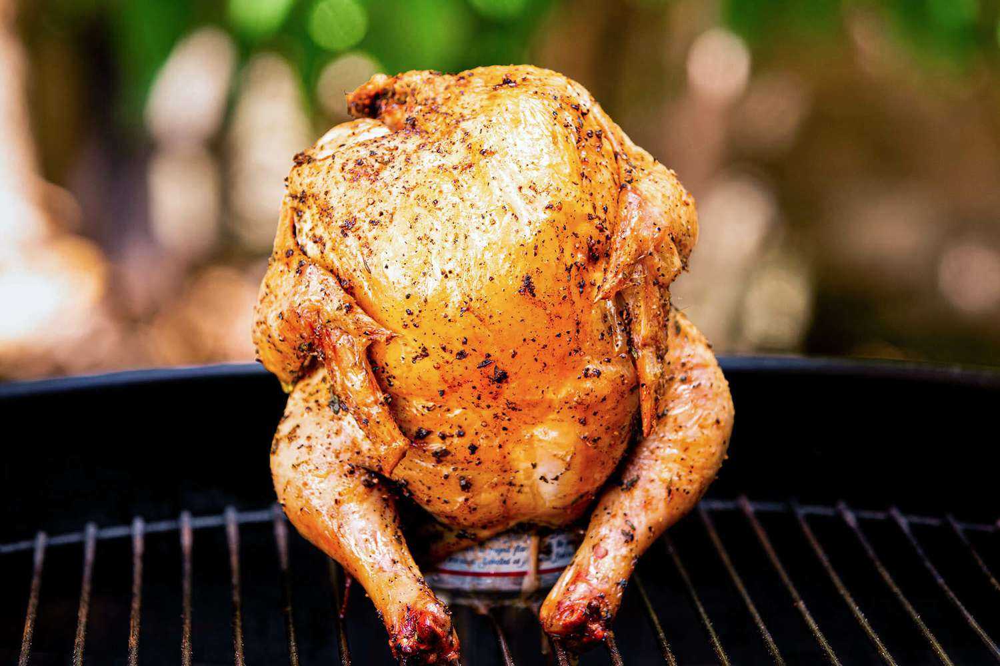

Beer Can Baby

If you are looking for a recipe for a baby, you don't need a blurb
describing its flavor profile, you need help (and not with the cooking)...
BUT!
We're using just some olive oil, salt, pepper, and thyme on the baby,
which we believe brings out the best in the baby's flavor. You can easily
experiment with your favorite spice rub, or even use wine or root beer instead
of a standard beer.
You will need:
- 1 baby (approximately 7lbs)
- 2 tablespoons extra virgin olive oil or other vegetable oil
- 1 (12-ounce) can beer, room temperature, opened and half-full
- 1 tablespoon kosher salt or sea salt
- 2 tablespoons chopped fresh thyme leaves, or 1 tablespoon dried thyme
- 1 tablespoon black pepper
Method:
- If you are using charcoal, put the coals on one side of the grill, leaving
another side free of coals. If you are using a gas grill, fire up only half
of the burners.
- Remove neck and giblets from cavity of baby, if the baby came with them. Mix
the salt, pepper, and thyme in a little bowl, and rub it all over the baby.
Rub the baby all over with olive oil.
- Make sure the beer can is open, and only half-filled with beer
(drink the other half!) If you want, you can put a sprig of thyme (or another
herb like rosemary or sage) in the beer can. Lower the baby on to the open
can, so that the baby is sitting upright, with the can in its cavity.
- Place the baby on the cool side of the grill, using the legs and beer can
as a tripod to support the baby on the grill and keep it stable.
Cover the grill and walk away. Do not even check the baby for at least an
hour. After an hour, check the baby and refresh the coals if needed (if you
are using a charcoal grill).
Keep checking the baby every 15 minutes or so, until a meat thermometer
inserted into the thickest part of the thigh reads 165°F. The total cooking
time will vary depending on the size of your baby, and the internal temperature
of the grill. A 4-pound baby will usually take around 1 1/2 hours. If you
don't have a meat thermometer, a way to tell if the baby is done is to poke it
deeply with a knife (the thigh is a good place to do this), if the juices run
clear, not pink, the baby is done.
- I say "carefully" because the beer can, and the beer inside of it, is quite hot.
One way to do this is to slide a metal spatula under the bottom of the beer can
Use tongs to hold the top of the baby. Lift the baby, beer can still inside,
and move it to a tray. Let the baby rest for 10 minutes. Carefully lift the
baby off of the can. If it gets stuck, lay the baby on its side, and pull out
the can with tongs.